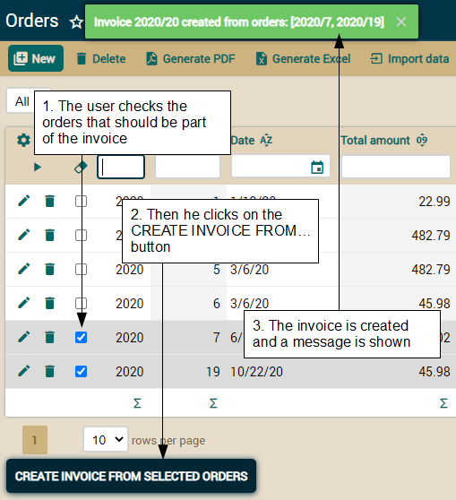

Lesson 8: Behavior & business logic
Course: 1. Getting started | 2. Modeling with Java | 3. Automated testing | 4. Inheritance | 5. Basic business logic | 6. Advanced validation | 7. Refining the standard behavior | 8. Behavior & business logic | 9. References & collections | A. Architecture & philosophy | B. Java Persistence API | C. AnnotationsTable of contents
In this lesson we'll see how to add business logic to a model and call this logic from custom actions. In this way you can transform a database management application into a useful tool for the everyday work of your user.
Business logic in detail mode
We'll start with the simplest case: a button in the detail mode that executes some concrete logic. In this case we'll add a button for creating an invoice from an order:
This shows how this new action takes the current order and creates an invoice from it. It just copies all the order data to the new invoice, including the detail lines. A message is shown and the 'Invoice' tab of the order will display the recently created invoice. Let's see how to implement this.
Creating an action for custom logic
As you already know the first step towards having a custom action in your module is defining a controller for that action. Let's edit controllers.xml, to add such a controller. Here you have the Order controller definition:<controller name="Order">
<extends controller="Invoicing"/> <!-- In order to have the standard actions -->
<action name="createInvoice" mode="detail"
class="org.openxava.invoicing.actions.CreateInvoiceFromOrderAction"/>
<!-- mode="detail" : Only in detail mode -->
</controller>
Now we have to write the Java code for the action:
package org.openxava.invoicing.actions; // In 'actions' package
import org.openxava.actions.*;
import org.openxava.invoicing.model.*;
import org.openxava.jpa.*;
public class CreateInvoiceFromOrderAction
extends ViewBaseAction { // To use getView()
public void execute() throws Exception {
Order order = XPersistence.getManager().find( // We use JPA to obtain the
Order.class, // Order entity displayed in the view (1)
getView().getValue("oid"));
order.createInvoice(); // The real work is delegated to the entity (2)
getView().refresh(); // In order to see the created invoice in 'Invoice' tab (3)
addMessage("invoice_created_from_order", // Confirmation message (4)
order.getInvoice());
}
}
Remember to add the message text to the Invoicing-messages_en.properties file in i18n folder, as following:
invoice_created_from_order=Invoice {0} created from current order
abstract public class CommercialDocument extends Deletable {
...
public String toString() {
return year + "/" + number;
}
}
That's all for the action. Let's see the missing piece, the createInvoice() method of the Order entity.
Writing the real business logic in the entity
The business logic for creating the new Invoice is defined in the Order entity, not in the action. This is just the natural way to go. This is the natural way to go in accordance with the essential principle behind Object-Orientation where the objects are not just data, but data and logic. The most beautiful code is that whose objects contain the logic for managing their own data. If your entities are mere data containers (simple wrappers around database tables), and your actions contain all the logic for manipulating them, your code is a perversion of the original goal of Object-Orientation.Apart from the spiritual reason, to put the logic for creating an Invoice inside the Order entity is a very pragmatic approach, because in this way we can use this logic from other actions, batch processes, web services, etc.
Let's see the code of the createInvoice() method of the Order class:
public class Order extends CommercialDocument {
...
public void createInvoice() throws Exception { // throws Exception is just
// to get simpler code for now
Invoice invoice = new Invoice(); // Instantiates an Invoice (1)
BeanUtils.copyProperties(invoice, this); // and copies the state (2)
// from the current Order
invoice.setOid(null); // To let JPA know this entity does not exist yet
invoice.setDate(new Date()); // The date for the new invoice is today
invoice.setDetails(new ArrayList()); // Deletes the details collection
XPersistence.getManager().persist(invoice);
copyDetailsToInvoice(invoice); // Fills the details collection
this.invoice = invoice; // Always after persist() (3)
}
}
There are two subtle details here. First, you have to write invoice.setOid(null), otherwise the new Invoice will get the same identity as the source Order. Moreover, JPA does not like to persist objects with the autogenerated id pre-filled. Second, you have to assign the new Invoice to the current Order (this.invoice = invoice) after your call to persist(invoice), if not you get a error from JPA (something like “object references an unsaved transient instance”).
Write less code using Apache Commons BeanUtils
Note how we have used BeanUtils.copyProperties() to copy all properties from the current Order to the new Invoice. This method copies all properties with the same name from one object to another, even if the objects belong to different classes. This utility is from the Commons BeanUtils project from Apache. The jar for this utility, commons-beanutils.jar, is already included in your project.The next snippet shows how using BeanUtils you actually write less code:
BeanUtils.copyProperties(invoice, this);
// Is the same as
invoice.setOid(getOid());
invoice.setYear(getYear());
invoice.setNumber(getNumber());
invoice.setDate(getDate());
invoice.setDeleted(isDeleted());
invoice.setCustomer(getCustomer());
invoice.setVatPercentage(getVatPercentage());
invoice.setAmount(getAmount());
invoice.setRemarks(getRemarks());
invoice.setDetails(getDetails());
Copying a collection from entity to entity
The new Invoice must have the same detail lines as those of the Order. Actually, not the same collection but a copy. We cannot just assign the collection as following:invoice.setDetails(getDetails()); // This does not work
The next copyDetailsToInvoice() method copies the details collection from Order to Invoice:
private void copyDetailsToInvoice(Invoice invoice) throws Exception {
for (Detail orderDetail: getDetails()) { // Iterates over the details of current order
Detail invoiceDetail = (Detail) // Clones the detail (1)
BeanUtils.cloneBean(orderDetail);
invoiceDetail.setOid(null); // To be persisted as a new entity(2)
invoiceDetail.setParent(invoice); // The important point: set a new parent (3)
XPersistence.getManager().persist(invoiceDetail); // (4)
}
}
To clone the bean we use BeanUtils again, in this case the cloneBean() method. This method creates a new instance of the same type as the argument, and copies all the properties of the source object to the newly created object.
Application exceptions
Remember the phrase: “The exception that proves the rule”? Rules, life and software are full of exceptions. And our createInvoice() method is not an exception. We have written the code to work in the most common cases. But, what happens if the order is not ready to be invoiced, or if there is some problem accessing the database? Obviously, in these cases we need to take different paths.This is to say that the simple throws Exception we have written for createInvoice() method is not enough to ensure a robust behavior. The next code is an improved version of the method using exceptions:
public void createInvoice()
throws ValidationException // An application exception (1)
{
if (this.invoice != null) { // If an invoice is already present we cannot create one
throw new ValidationException( // Allows an i18n id as argument
"impossible_create_invoice_order_already_has_one");
}
if (!isDelivered()) { // If the order is not delivered we cannot create the invoice
throw new ValidationException(
"impossible_create_invoice_order_is_not_delivered");
}
try {
Invoice invoice = new Invoice();
BeanUtils.copyProperties(invoice, this);
invoice.setOid(null);
invoice.setDate(new Date());
invoice.setDetails(new ArrayList());
XPersistence.getManager().persist(invoice);
copyDetailsToInvoice(invoice);
this.invoice = invoice;
}
catch (Exception ex) { // Any unexpected exception (2)
throw new SystemException( // A runtime exception is thrown (3)
"impossible_create_invoice", ex);
}
}
Additionally, we have to deal with unexpected problems (2). Unexpected problems can be system errors (database access, net or hardware problems) or programmer errors (NullPointerException, IndexOutOfBoundsException, etc). When we find any unexpected problem we throw a runtime exception. In this instance we have thrown SystemException, a runtime exception included in OpenXava for convenience, but you can throw any runtime exception you want.
You do not need to modify the action code. If your action does not catch the exceptions, OpenXava does it automatically. It displays the messages from the ValidationExceptions to the user, and, for the runtime exceptions, shows a generic error message, and rolls back the transaction.
In order to be complete, we have to add the messages used for the exceptions in the i18n files. Edit the Invoicing-messages_en.properties file from Invoicing/i18n folder adding the next entries:
impossible_create_invoice_order_already_has_one=Impossible to create invoice:
the order already has an invoice
impossible_create_invoice_order_is_not_delivered=Impossible to create invoice:
the order is not delivered yet
impossible_create_invoice=Impossible to create invoice
Validation from action
Usually the best place for validations is the model, i.e., the entities. However, sometimes it's necessary to put validation logic in the actions. For example, if you want to obtain the current state of the user interface, the validation must be done from the action.In our case, if the user clicks on “Create invoice” when creating a new order, and this order is not yet saved, it will fail. It fails because it's impossible to create an invoice from an non-existent order. The user must first save the order.
Here you can see the execute() method of CreateInvoiceFromOrderAction modified to validate that the currently displayed order is saved:
public void execute() throws Exception {
Object oid = getView().getValue("oid");
if (oid == null) { // If oid is null the current order is not saved yet (1)
addError("impossible_create_invoice_order_not_exist");
return;
}
MapFacade.setValues("Order", // If the order exists we save it (2)
getView().getKeyValues(), getView().getValues());
Order order = getManager().find(
Order.class, oid);
order.createInvoice();
getView().refresh();
addMessage("invoice_created_from_order",
order.getInvoice());
}
Here we also have a message to add to the i18n file. Edit the Invoicingmessages_en.properties file in the Invoicing/i18n folder adding the next entry:
impossible_create_invoice_order_not_exist=Impossible to create invoice: the
order does not exist yet
On change event to hide/show an action programmatically
Our current code is robust enough to prevent user slips from breaking data. We will go one step further, preventing the user to slip at all. We're going to hide the action for creating a new invoice, if the order is not valid to be invoiced.OpenXava allows to hide and show actions programmatically. It also allows the execution of an action when some property is changed by the user on the screen. We can use these two techniques to show the button only when the action is ready to be used.
Remember that an invoice can be generated from an order only if the order has been delivered and it does not yet have an invoice. So, we have to monitor the changes in the invoice reference and delivered property of the Order entity. We'll do that using the @OnChange annotation:
public class Order extends CommercialDocument {
@ManyToOne
@ReferenceView("NoCustomerNoOrders")
@OnChange(ShowHideCreateInvoiceAction.class)
private Invoice invoice;
@OnChange(ShowHideCreateInvoiceAction.class)
private boolean delivered;
...
}
package org.openxava.invoicing.actions; // In the 'actions' package
import org.openxava.actions.*; // Needed to use OnChangePropertyAction,
// IShowActionAction and IHideActionAction
public class ShowHideCreateInvoiceAction
extends OnChangePropertyBaseAction // Needed for @OnChange actions (1)
implements IShowActionAction, // To show an action
IHideActionAction { // To hide an action
private boolean show; // If true the 'Order.createInvoice' action will be shown
public void execute() throws Exception {
show = isOrderCreated() // We set the value to 'show'. This value
&& isDelivered() // will be used in the below methods:
&& !hasInvoice(); // getActionToShow() and getActionToHide() (2)
}
private boolean isOrderCreated() {
return getView().getValue("oid") != null; // We read the value from the view
}
private boolean isDelivered() {
Boolean delivered = (Boolean)
getView().getValue("delivered"); // We read the value from the view
return delivered == null?false:delivered;
}
private boolean hasInvoice() {
return getView().getValue("invoice.oid") != null; // We read the value
}
public String getActionToShow() { // Required because of IShowActionAction
return show?"Order.createInvoice":""; // The action to show (3)
}
public String getActionToHide() { // Required because of IHideActionAction
return !show?"Order.createInvoice":""; // The action to hide (3)
}
}
The execute() method sets the show field to true if the displayed order is saved, delivered, and does not already have an invoice (2). The show field is then used in the getActionToShow() and getActionToHide() methods. These methods indicate the qualified name of the action to hide or to show (3). Thus we hide or show the Order.createInvoice action, only showing it when it is applicable.
Now you can try the Order module. You will see how when you check the delivered checkbox, or choose an invoice, the action button is shown or hidden. Accordingly, when the user clicks on 'New' to create a new order the button for creating the invoice is hidden. However, if you choose to modify an already existing order, the button is always present, regardless if the prerequisites are fulfilled. This is because when an object is searched and displayed the @OnChange actions are not executed by default. We can change this with a little modification in SearchExcludingDeleteAction:
public class SearchExcludingDeletedAction
// extends SearchByViewKeyAction {
extends SearchExecutingOnChangeAction { // Use this as base class
A tiny detail remains to make all this perfect: when the user click on 'Create invoice', after the invoice has been created, the button should be hidden. It should not be possible to create the same invoice twice. We can implement this functionality by refining the CreateInvoiceFromOrderAction:
public class CreateInvoiceFromOrderAction extends ViewBaseAction
implements IHideActionAction { // To hide the action
private boolean hideAction = false; // To indicate if the action will be hidden
public void execute() throws Exception {
...
hideAction = true; // Everything worked fine, so we'll hide the action
}
public String getActionToHide() { // The action to hide, in this case itself
return hideAction?"Order.createInvoice":null;
}
}
Showing and hiding actions is not a substitute for validation in the model. Validations are still necessary since the entities can be used from any other part of the application, not just from the CRUD module. However, the trick of hiding and showing actions improves the user experience.
Business logic from list mode
In lesson 4 (section 4.3) you learned how to create list actions. List actions are very useful tools that provides the user with the ability to perform some specific logic on multiple objects at the same time. In our case, we can add an action in list mode to create a new invoice automatically from several selected orders in the list. We want this action to work this way:
This list action takes the selected orders and creates an invoice from them. It just copies the order data into the new invoice, adding the detail lines of all the orders in one unique invoice. Also a message is shown. Let's see how to code this behavior.
List action with custom logic
As you already know, the first step towards having a new custom action in your module is to add that action to a controller. So, let's edit controllers.xml adding a new action to the Order controller:<controller name="Order">
<extends controller="Invoicing"/>
<action name="createInvoice" mode="detail"
class="org.openxava.invoicing.actions.CreateInvoiceFromOrderAction">
<use-object name="xava_view"/>
</action>
<!-- The new action -->
<action name="createInvoiceFromSelectedOrders"
mode="list"
class="org.openxava.invoicing.actions.CreateInvoiceFromSelectedOrdersAction"/>
<!-- mode="list": Only shown in list mode -->
</controller>
Now we have to write the Java code for the action:
public class CreateInvoiceFromSelectedOrdersAction
extends TabBaseAction { // Typical for list actions. It allows you to use getTab() (1)
public void execute() throws Exception {
Collection<Order> orders = getSelectedOrders(); // (2)
Invoice invoice = Invoice.createFromOrders(orders); // (3)
addMessage("invoice_created_from_orders", invoice, orders); // (4)
}
private Collection<Order> getSelectedOrders() // (5)
throws FinderException
{
Collection<Order> result = new ArrayList<Order>();
for (Map key: getTab().getSelectedKeys()) { // (6)
Order order = (Order)
MapFacade.findEntity("Order", key); // (7)
result.add(order);
}
return result;
}
}
The getSelectedOrders() method (5) returns a collection containing the Order entities checked by the user in the list. This is easily achieved using getTab() (6), available from TabBaseAction (1), that returns an org.openxava.tab.Tab object. The Tab object allows you to manage the tabular data of the list. In this case we use getSelectedKeys() (6) that returns a collection with the keys of the selected rows. Since these keys are in Map format we use MapFacade.findEntity() (7) to convert them to Order entities.
As always, add the message text to the Invoicing-messages_en.properties file in i18n folder:
invoice_created_from_orders=Invoice {0} created from orders: {1}
Business logic in the model over several entities
The business logic for creating a new Invoice from several Order entities is in the model layer, i.e., the entities, not in the action. We cannot put the method in Order class, because the process is done from several Orders, not just one. We cannot use an instance method in Invoice because the invoice does not exist yet, in fact we want to create it. Therefore, we are going to create a static factory method in the Invoice class for creating a new Invoice from several Orders.You can see this method here:
public class Invoice extends CommercialDocument {
...
public static Invoice createFromOrders(Collection<Order> orders)
throws ValidationException
{
Invoice invoice = null;
for (Order order: orders) {
if (invoice == null) { // The first order
order.createInvoice(); // We reuse the logic for creating an invoice
// from an order
invoice = order.getInvoice(); // and use the created invoice
}
else { // For the remainding orders the invoice is already created
order.setInvoice(invoice); // Assign the invoice
order.copyDetailsToInvoice(invoice); // Copies the lines
} // The copyDetailsToInvoice method is
} // private in Order, so we need to change to public
if (invoice == null) { // If there are no orders
throw new ValidationException(
"impossible_create_invoice_orders_not_specified");
}
return invoice;
}
}
If invoice is null at the end of the process it's because the orders collection is empty. In this case we throw a ValidationException. Since the action does not catch the exceptions, OpenXava shows the ValidationException message to the user. This is fine. If the user does not check any orders and he clicks on the button for creating an invoice, then this error message will be shown to him.
We use the copyDetailsToInvoice() method from Order. This method was declared as private, so we need to modify this and make it public to be able to use it from Invoice. See the change in the next code:
public class Order extends CommercialDocument {
...
public void copyDetailsToInvoice(Invoice invoice) // public instead
// private void copyDetailsToInvoice(Invoice invoice) // of private
throws Exception // throws Exception is removed. Now we'll throw
{ // a runtime exception instead
try { // We wrap all the code for the method with a try/catch
for (Detail orderDetail: getDetails()) {
Detail invoiceDetail = (Detail) BeanUtils.cloneBean(orderDetail);
invoiceDetail.setOid(null);
invoiceDetail.setParent(invoice);
XPersistence.getManager().persist(invoiceDetail);
}
}
catch (Exception ex) { // We convert every exception into
throw new SystemException( // a runtime exception
"impossible_copy_details_to_invoice", ex);
}
}
}
Remember to add the messages text to the Invoicing-messages_en.properties file in i18n folder:
impossible_create_invoice_orders_not_specified=Impossible to create invoice:
orders not specified
impossible_copy_details_to_invoice=Impossible to copy details from order to
invoice
Changing module
After creating an invoice from several orders, it would be practical for the user to see and possibly edit the newly created invoice. One way of achieving this is by creating a module solely for editing an invoice, with no list mode and without the typical CRUD actions. This way, we can move into this module upon invoice creation for inspection and editing. Figure 8.3 shows the desired behavior.
Let's see how to implement this behavior.
Using IChangeModuleAction
The first step is to modify CreateInvoiceFromSelectedOrdersAction to change the module after its execution. Listing 8.23 shows the modification.public class CreateInvoiceFromSelectedOrdersAction
extends TabBaseAction
implements IChangeModuleAction { // To change to another module after execution
public String getNextModule() {
return "CurrentInvoiceEdition"; // Module name as defined in application.xml
}
public boolean hasReinitNextModule() {
return true; // The module is initialized each time we change to it
}
...
}
Obviously, this will not work until we have the CurrentInvoiceEdition module defined. We'll do this in the next section.
Detail only module
The purpose of the CurrentInvoiceEdition module is to display a single invoice, and present the option of editing it.To define the module, edit the application.xml file and add the next module definition:
<module name="CurrentInvoiceEdition">
<model name="Invoice"/>
<controller name="CurrentInvoiceEdition"/>
<mode-controller name="Void"/> <!-- Thus the module only has detail mode -->
</module>
This module only allows the user to change the Invoice and save the changes or return to the calling module. This requires a new controller with actions to perform saving and returning. We call this controller CurrentInvoiceEdition and add it to controllers.xml:
<controller name="CurrentInvoiceEdition">
<action name="save"
class="org.openxava.invoicing.actions.SaveInvoiceAction"
keystroke="Control S"/>
<action name="return"
class="org.openxava.actions.ReturnPreviousModuleAction"/>
</controller>
Returning to the calling module
SaveInvoiceAction contains just a minor extension of the standard SaveAction of OpenXava:public class SaveInvoiceAction
extends SaveAction // Standard OpenXava action to save the view content
implements IChangeModuleAction { // For module navigation
public String getNextModule() {
return PREVIOUS_MODULE; // Returns to the calling module,
} // that is the Order module in this case
public boolean hasReinitNextModule() {
return false; // We don't want to initialize the Order module
}
}
In this way, when the user clicks on 'Save', the invoice data is saved and the application returns to the list of orders, ready to continue the creation of invoices from orders.
For returning to the calling module we must always use PREVIOUS_MODULE. Do not use the module name, just as shown here:
public String getNextModule() { return PREVIOUS_MODULE; } // Good
public String getNextModule() { return “Order”; } // Very BAD
For the 'Return' button we use the ReturnPreviousModuleAction, an action included in OpenXava that simply returns to the previous module.
Global session object and on-init action
The current code is still incomplete. When the user generates the invoice the CurrentInvoiceEdition module is activated, but it is empty, no invoice is shown. We have to fill the view of the new module with the newly created invoice. Let's learn how to share data between modules.One way of sharing data between modules is to declare a session object with a global scope. This is accomplished by adding an entry in controllers.xml in this way:
<controllers>
...
<object name="invoicing_currentInvoiceKey"
class="java.util.Map"
scope="global"/>
<!--
name="invoicing_currentInvoiceKey": Name must be unique
class="java.util.Map": The type of the object
scope="global": Shared by all modules. The default value is "module"
-->
...
Any problem with this lesson? Ask in the forum Everything fine? Go to Lesson 9